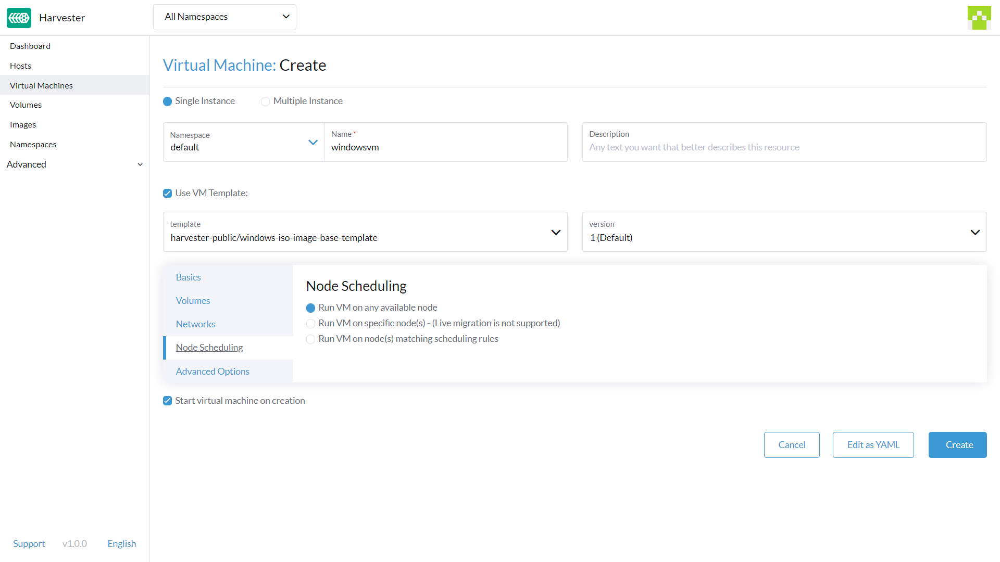
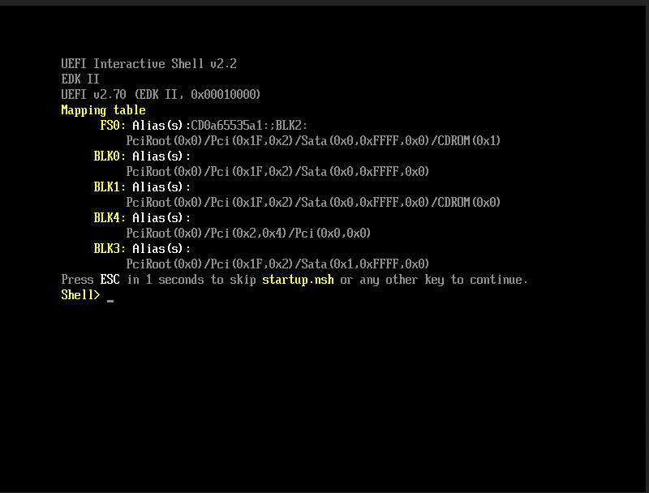
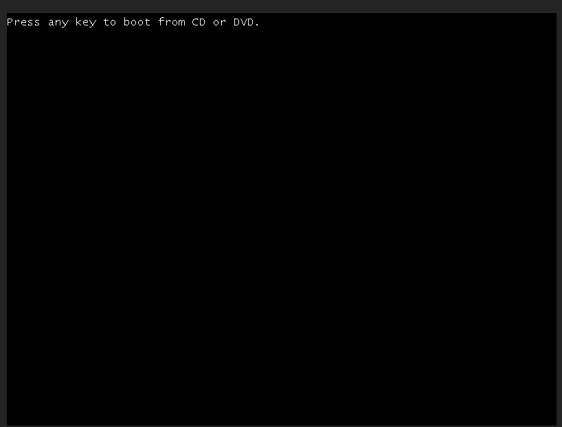

|
Este documento foi traduzido usando tecnologia de tradução automática de máquina. Sempre trabalhamos para apresentar traduções precisas, mas não oferecemos nenhuma garantia em relação à integridade, precisão ou confiabilidade do conteúdo traduzido. Em caso de qualquer discrepância, a versão original em inglês prevalecerá e constituirá o texto official. |
Crie uma Máquina Virtual Windows
Crie uma ou mais máquinas virtuais na página Máquinas Virtuais.
|
Para criar máquinas virtuais Linux, consulte esta página. |
Como criar uma Máquina Virtual Windows
Seção de Cabeçalho
-
Crie uma única instância de máquina virtual ou várias instâncias de máquinas virtuais.
-
Defina o nome da máquina virtual.
-
(Opcional) Forneça uma descrição para a máquina virtual.
-
(Opcional) Selecione o modelo de máquina virtual
windows-iso-image-base-template. Este modelo adicionará um volume com os driversvirtiopara Windows.
Aba Básica
-
Configure o número de
CPUnúcleos atribuídos à máquina virtual. -
Configure a quantidade de
Memoryatribuída à máquina virtual.

|
Como mencionado acima, recomenda-se o uso do modelo de máquina virtual Windows. A seção |
|
Os valores |
Aba de Volumes
-
O primeiro volume é um
Image Volumecom os seguintes valores:-
Name: O valorcdrom-diské definido por padrão. Você pode mantê-lo ou alterá-lo. -
Type: Selecionecd-rom. -
Image: Selecione a imagem do Windows a ser instalada. Veja Carregar Imagens para a descrição completa sobre como criar novas imagens. -
Size: O valor20é definido por padrão. Você pode alterá-lo se sua imagem tiver um tamanho maior. -
Bus: O valorSATAé definido por padrão. É recomendado que você não o altere.
-
-
O segundo volume é um
Volumecom os seguintes valores:-
Name: O valorrootdiské definido por padrão. Você pode mantê-lo ou alterá-lo. -
Type: Selecionedisk. -
StorageClass: Você pode usar a StorageClass padrãoharvester-longhornou especificar uma personalizada. -
Size: O valor32é definido por padrão. Veja os requisitos de espaço em disco para Windows Server e Windows 11 antes de alterar este valor. -
Bus: O valorVirtIOé definido por padrão. Você pode mantê-lo ou alterá-lo para as outras opções disponíveis,SATAouSCSI.
-
-
O terceiro volume é um
Containercom os seguintes valores:-
Name: O valorvirtio-container-diské definido por padrão. Você pode mantê-lo ou alterá-lo. -
Type: Selecionecd-rom. -
Docker Image: O valorregistry.suse.com/suse/vmdp/vmdp:2.5.4.2é definido por padrão. Recomendamos não alterar este valor. -
Bus: O valorSATAé definido por padrão. Recomendamos não alterar este valor.
-
-
Você pode adicionar discos adicionais usando os botões
Add Volume,Add Existing Volume,Add VM ImageouAdd Container.

Aba de Redes
-
A Rede de Gerenciamento é adicionada por padrão com os seguintes valores:
-
Name: O valordefaulté definido por padrão. Você pode mantê-lo ou alterá-lo. -
Model: O valore1000é definido por padrão. Você pode mantê-lo ou alterá-lo para as outras opções disponíveis no menu suspenso. -
Network: O valormanagement Networké definido por padrão. Você não pode alterar esta opção se nenhuma outra rede tiver sido criada. Veja Rede VM para a descrição completa sobre como criar novas redes. -
Type: O valormasqueradeé definido por padrão. Você pode mantê-lo ou alterá-lo para a outra opção disponível,bridge.
-
-
Você pode adicionar redes adicionais clicando em
Add Network.

|
Alterar as configurações de |
Aba de Agendamento de Nó
-
Node Schedulingestá definido comoRun VM on any available nodepor padrão. Você pode mantê-lo ou alterá-lo para as outras opções disponíveis no menu suspenso.

Aba de Opções Avançadas
-
OS Type: O valorWindowsé definido por padrão. É recomendado que você não o altere. -
Machine Type: O valorNoneé definido por padrão. É recomendado que você não o altere. Veja a documentação Tipo de Máquina KubeVirt antes de alterar este valor. -
(Opcional)
Hostname: Defina o nome do host da máquina virtual. -
(Opcional)
Cloud Config: Os valores deUser DataeNetwork Dataestão definidos com valores padrão. Atualmente, essas configurações não são aplicadas a máquinas virtuais baseadas em Windows. -
(Opcional)
Enable TPM,Booting in EFI mode,Secure Boot: Tanto o dispositivo TPM 2.0 quanto o firmware UEFI com Inicialização Segura são requisitos essenciais para o Windows 11.
|
Atualmente, apenas vTPMs não persistentes são suportados, e seu estado é apagado após cada desligamento da máquina virtual. Portanto, Bitlocker não deve ser habilitado. |

Instalação do Windows
-
Selecione a máquina virtual que você acabou de criar e clique em
Start. -
Inicie o instalador e siga as instruções fornecidas pelo instalador.
-
(Opcional) Se você estiver usando volumes baseados em
virtio, precisará carregar o driver específico para permitir que o instalador os detecte. Se você estiver usando o modelo de máquina virtualwindows-iso-image-base-template, a instrução é a seguinte:-
Clique em
Load drivere, em seguida, clique emBrowsena caixa de diálogo e encontre uma unidade de CD-ROM com o prefixoVMDP-WIN. Em seguida, encontre o diretório do driver de acordo com a versão do Windows que você está instalando; por exemplo, o Windows Server 2012r2 deve expandirwin8.1-2012r2e escolher o diretóriopvvxdentro.
-
Clique em
OKpara permitir que o instalador escaneie este diretório em busca de drivers, escolhaSUSE Block Driver for Windowse clique emNextpara carregar o driver.
-
Aguarde o instalador carregar o driver. Se você escolher a versão correta do driver, os volumes
virtioserão detectados assim que o driver for carregado.
-
-
(Opcional) Se você estiver usando outro hardware baseado em
virtio, como adaptador de rede, precisará instalar esses drivers manualmente após concluir a instalação. Para instalar drivers, abra o disco do driver VMDP e use o instalador com base na sua plataforma.
A matriz de suporte do pacote de drivers VMDP para Windows é a seguinte (assuma que o caminho da unidade de CD-ROM VMDP é E):
| Versão | Com suporte | Caminho do driver |
|---|---|---|
Windows 7 |
Não |
|
Windows Server 2008 Beta 3 |
Não |
|
Windows Server 2008r2 |
Não |
|
Windows 8 x86(x64) |
Sim |
|
Windows Server 2012 x86(x64) |
Sim |
|
Windows 8.1 x86(x64) |
Sim |
|
Windows Server 2012r2 x86(x64) |
Sim |
|
Windows 10 x86(x64) |
Sim |
|
Windows Server 2016 x86(x64) |
Sim |
|
Windows Server 2019 x86(x64) |
Sim |
|
Windows 11 x86(x64) |
Sim |
|
Windows Server 2022 x86(x64) |
Sim |
|
|
Se você não usou o modelo |
|
Para instruções completas sobre como instalar o driver e as ferramentas do VMDP, consulte a documentação em https://documentation.suse.com/sle-vmdp/2.5/html/vmdp/index.html |
Problemas conhecidos
ISO do Windows incapaz de inicializar ao usar o modo EFI
Ao usar o modo EFI com o Windows, você pode encontrar o sistema inicializado com outros dispositivos, como HDD ou shell UEFI, como o abaixo:

Isso ocorre porque o Windows solicitará um Press any key to boot from CD or DVD… para permitir que o usuário decida se deseja inicializar a partir da ISO do instalador ou não, e precisa de intervenção humana para permitir que o sistema inicialize a partir do CD ou DVD.

Alternativamente, se o sistema já tiver inicializado no shell UEFI, você pode digitar reset para forçar o sistema a reiniciar novamente. Uma vez que o prompt apareça, você pode pressionar qualquer tecla para permitir que o sistema inicialize a partir da ISO do Windows.
A VM trava quando a memória reservada não é suficiente
Há um problema conhecido com a máquina virtual do Windows quando ela é alocada com mais de 8GiB sem memória reservada suficiente configurada. A máquina virtual trava sem aviso.
Isso pode ser corrigido alocando pelo menos 256MiB de memória reservada para o modelo na aba Opções Avançadas. Se 256MiB não funcionar, tente 512MiB.

BSoD (Tela Azul da Morte) na primeira inicialização do Windows
Há um problema conhecido com máquinas virtuais do Windows usando o Windows Server 2016 e versões superiores, um BSoD com o código de erro KMODE_EXCEPTION_NOT_HANDLED pode aparecer na primeira inicialização do Windows. Ainda estamos investigando e resolveremos esse problema em uma versão futura.
Como solução alternativa, você pode criar ou modificar o arquivo /etc/modprobe.d/kvm.conf na instalação do SUSE Virtualization, ao atualizar /oem/99_custom.yaml conforme mostrado abaixo:
name: Harvester Configuration
stages:
initramfs:
- commands: # ...
files:
- path: /etc/modprobe.d/kvm.conf
permissions: 384
owner: 0
group: 0
content: |
options kvm ignore_msrs=1
encoding: ""
ownerstring: ""
# ...|
Esta ainda é uma solução experimental. Para mais informações, consulte este problema e nos avise se você encontrar algum problema após aplicar esta solução alternativa. |